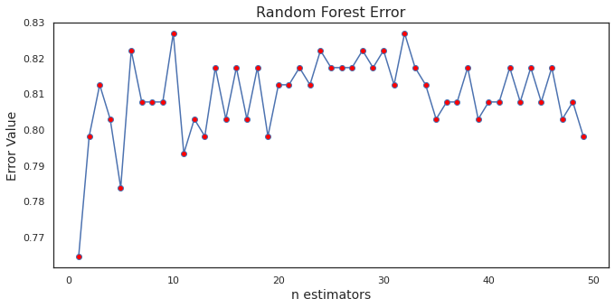
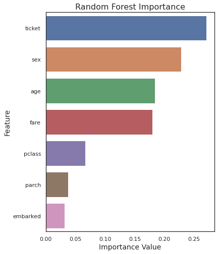
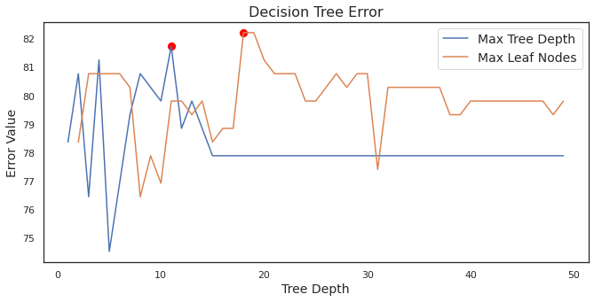
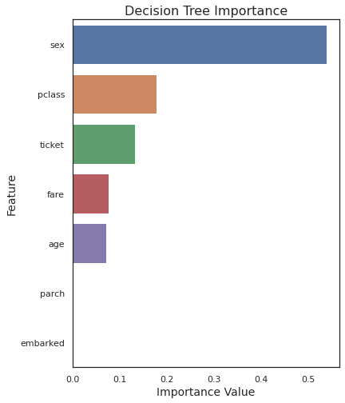
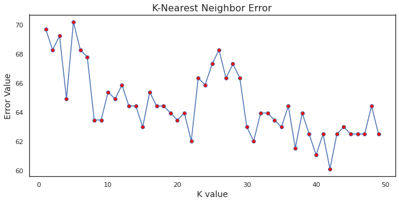

Random Forest splits the data into growing trees, using minute differences to classify and learn which
qualities generates teh expected outcome from each fearture.
The graph below (4.1) shows the number of randomness used (n estimators)
that predicts the at the highest accuracy.
The graph on the right (4.2) shows the
importance of each feature in its classifications.

Figure 4.1: Graph showing the error value based on n estimators.

Figure 4.2: Graph showing the feature importance in classifications for RF.
Random Forest got a 82.692% prediction accuracy.
Decision Tree (DT)
Decision trees use various algorithms which split a node into two or more predecessor nodes.
For every split, the algorithm calculates the information gain and entropy of every unused
attribute and then selects the highest. Then, it splits again and repeats the process with the
unused features. This algorithm continues until all attributes are utilized.
The graph below (4.3) shows the tree depth
that predicts the at the highest accuracy.
The graph on the right (4.4) shows the
importance of each feature in its classifications.

Figure 4.3: Shows the error values based off the tree depth when utilizing DT.

Figure 4.4: Graph showing the feature importance in classifications for DT.
Decision Tree got a 82.211% prediction accuracy.
K-Nearest Neighbor (KNN)
KNN assumes that proximity is equivalent to similarity. Basing off this assumption, it tries to learn based off
grabbing the nearest data points to create predictions.
The graph below (4.5) shows the amount of nearest neighbors (k value)
that predicts at the highest accuracy.

Figure 4.5: Graph showing the highest accuracy based on K value.